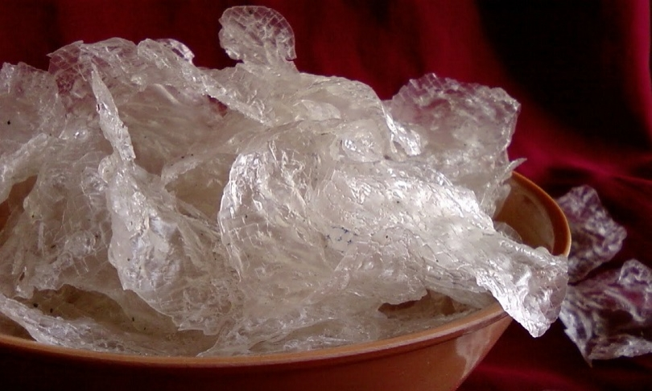
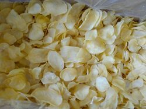
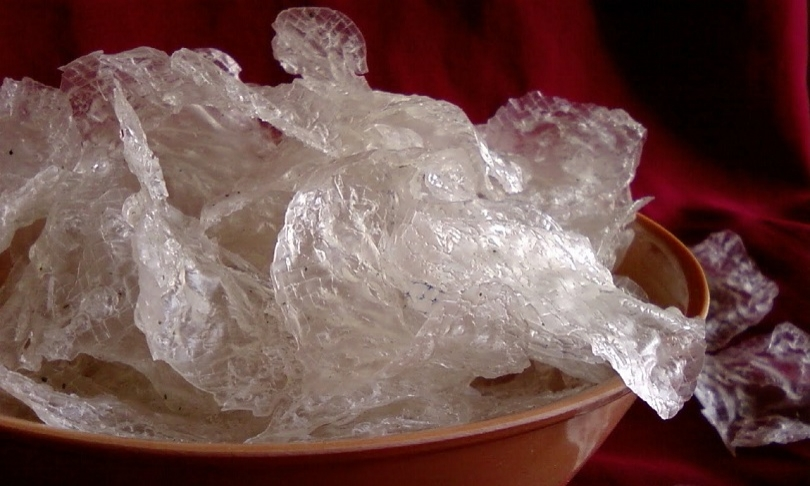
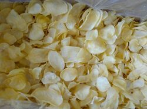

HOME
ABOUT US
CONTACT US

 



Nagali Papad Rice Papad Sabudana Papad Potato Weffers


Kurdai Chakali Udid Papad Sabudana Potato Papad
List of Papad's
- Nagali Papad :
- Nagali Papad, Nagali Coin Papad
- Rice Papad :
- Rice Papad, Rice Coin Papad
- Kurdai :
- Gehu Kurdai, Nagali Kurdai, Rawa Kurdai, Sabudana Kurdai, Color kurdai: Red, Blue, Yellow, Orange, Green, purple, White
- Chakali :
- Potato Chakali, Rice Chakali, Nagali Chakali
- Udid Papad :
- Udid Papad, Udid Coin Papad
- Sabudana-Potato Papad
- Sabudana Papad
- Weffers
.....Please Check All Images.....